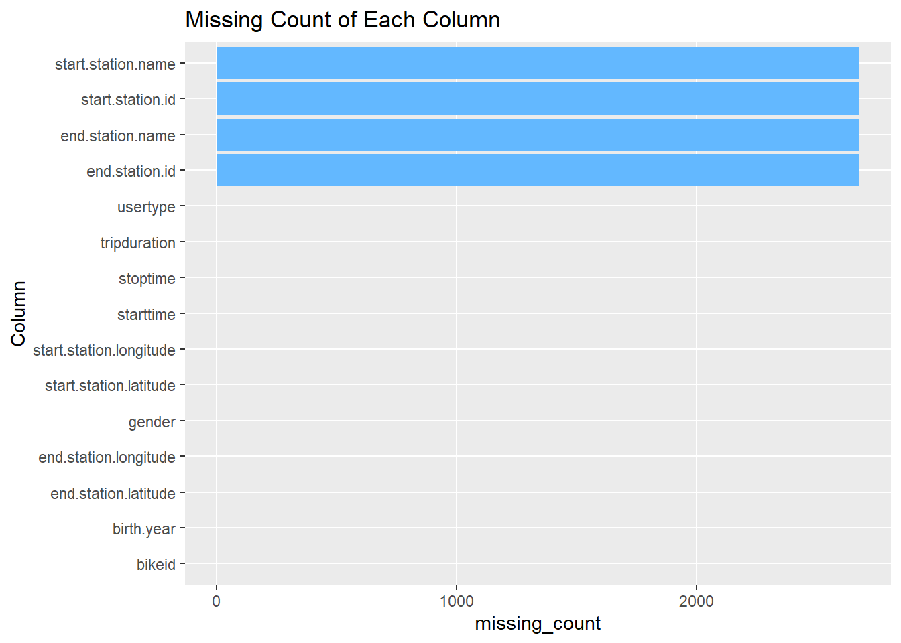
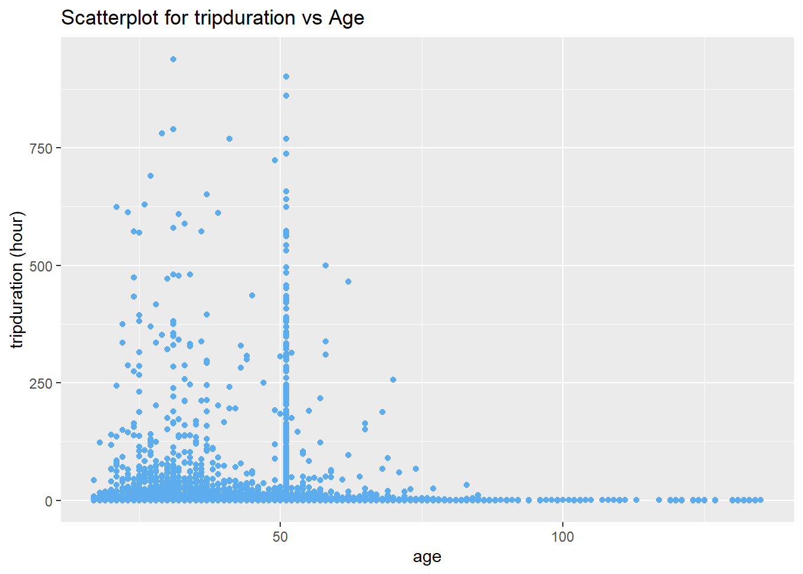

Chapter 3 Data transformation
Part 1 Outliers
Based on the variable descriptions in section 2, we want to look into more details to check if there are any outliers and for those outliers, whether they are purely wrong data input that we can remove or if we need to correct data. Identifying outliers by plotting helps analysis. Boxplots and bar charts were created for this purpose.
Especially We want to check tripduration and age. One month bike trip data 201906 was randomly selected to analyze the outliers.
## 'data.frame': 2125370 obs. of 17 variables:
## $ tripduration : int 330 830 380 1155 1055 128 315 471 1554 392 ...
## $ starttime : chr "2019-06-01 00:00:01.5000" "2019-06-01 00:00:04.2400" "2019-06-01 00:00:06.0190" "2019-06-01 00:00:06.7760" ...
## $ stoptime : chr "2019-06-01 00:05:31.7600" "2019-06-01 00:13:55.1470" "2019-06-01 00:06:26.7790" "2019-06-01 00:19:22.5380" ...
## $ start.station.id : int 3602 3054 229 3771 441 3236 3129 3467 379 467 ...
## $ start.station.name : chr "31 Ave & 34 St" "Greene Ave & Throop Ave" "Great Jones St" "McKibbin St & Bogart St" ...
## $ start.station.latitude : num 40.8 40.7 40.7 40.7 40.8 ...
## $ start.station.longitude: num -73.9 -73.9 -74 -73.9 -74 ...
## $ end.station.id : int 3570 3781 326 3016 3159 495 3560 401 2006 3368 ...
## $ end.station.name : chr "35 Ave & 37 St" "Greene Av & Myrtle Av" "E 11 St & 1 Ave" "Kent Ave & N 7 St" ...
## $ end.station.latitude : num 40.8 40.7 40.7 40.7 40.8 ...
## $ end.station.longitude : num -73.9 -73.9 -74 -74 -74 ...
## $ bikeid : int 20348 34007 20587 33762 31290 25137 25648 26972 32969 33539 ...
## $ usertype : chr "Subscriber" "Subscriber" "Subscriber" "Subscriber" ...
## $ birth.year : int 1992 1987 1990 1987 1973 1989 1995 1990 1970 1980 ...
## $ gender : int 1 2 2 1 1 1 1 1 1 1 ...
## $ age : num 28 33 30 33 47 31 25 30 50 40 ...
## $ year_month : chr "201906" "201906" "201906" "201906" ... From above boxplot, we see a lot of outliers, there are some abanomal trip duration, we want to bin the tripduration to check in more details.

From vertical bar chart, we can see most of the trips are less than 1 hour, and a few trip between 1 to 24 hours. For trips more than 24 hours, we define them as outliers and removed associated rows. It’s possible for the trip more than 12 hours, for example, it starts at 5:00 am and ends at 9:00pm if a person is interested to tour the whole Mahattan from north to south and from east to west. However, for trips more than 1 day, they are very rare cases. There are many different reasons that cause the trip more than 24 hours, for example, system error, the bike is stolen or a person forgot to return the bike…
Next we look into ages.


From the boxlpot and histogram, we can see most of the trips made by age between 20 and 70. However, there some abnoraml ages which are even more than 120.
To better present the data for further analysis, we define age above 100 as outliers and removed those data.
Also, another boundary to mention, according to the rental agreement, ‘You may not ride a Bicycle if You are under 16 years of age. A minor who is 16 years of age or older may only use the Services if the minor’s subscription is purchased by, and the minor is under the responsibility of, the minor’s parent or legal guardian.’ https://assets.citibikenyc.com/rental-agreement.html We checked data range, there is no record for age below 16.
To summarize, we have defined tripduration more than 24 hours and age above 100 years old as outliers and removed those rows.
Part 2 Data Transformation
[Since each file contains more than Million rows, it’s very slow to perform data transformation in R. We used Mysql server to process our data, all the SQL code have been used to generate datasets are located here:] https://github.com/xguo7013/NYC-Bike-Share/tree/main/sql